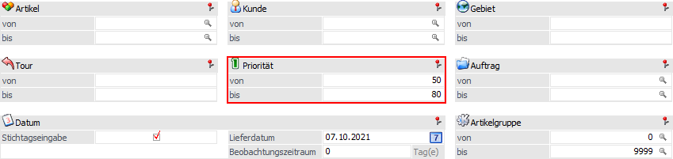

Im Menüpunkt…
1 WinLine FAKT
1 Stammdaten
1 Konten
1 Personenkonten
1 Register "FAKT"
… steht ein 5-stelliges numerisches Prioritätsfeld zur Verfügung. Dieses wird bei der Erfassung eines Belegs automatisch vom Kundenstamm in den Belegkopf dupliziert und kann im Register "Zusatz" editiert werden. In dem Menüpunkt…
1 WinLine FAKT
1 Erfassen
1 Kundenbestellungen
1 Kundenbestellungen bearbeiten
… kann nach dieser Kundenpriorität selektiert werden.

Hinweis
Wenn nichts eingetragen ist, dann haben diese Belege oberste Priorität.
Es werden jene Kunden zuerst beliefert, deren Priorität höher ist.
Beispiel
Der Kunde 230A001 hat die Priorität 0 und der Kunde 230B001 hat die Priorität 1. Beide Kunden haben einen Auftrag über 100 Stück, es sind aber nur 50 Stück des Artikels auf Lager. Der Kunde mit der höheren Priorität (hier der Kunde 230A001) wird zuerst beliefert.
Ausnahme
Wenn beim Kunden der niedrigeren Priorität (hier der Kunde 230B001) der Lagerstand für eine Gesamtauslieferung ausreicht und beim Kunden mit der höheren Priorität (hier Kunde 230A001) jedoch nicht, dann wird der Kunde 230B001 zuerst beliefert.